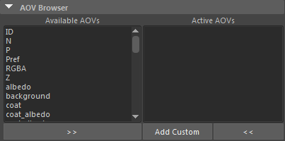

| 延伸阅读 |
|---|
| 请参见《Arnold 用户手册》中的渲染设置 |
AOV（任意输出变量）提供了一种将任意着色网络组件渲染到不同图像的方法。例如，美工人员可能会发现，使用 AOV 可以很方便地将直接照明和间接照明贡献分开，随后在合成期间再将它们重新合并到一起。Arnold 提供了用于输出深度、位置和运动向量的内置 AOV。
在渲染设置(Render Settings)对话框的“Arnold 渲染器”(Arnold Renderer)选项卡右侧，您应该可以看到“AOV”(AOVs)选项卡。左侧列表中显示每个组的可用 AOV。选择一个可用 AOV 时，它会移动至“激活的 AOV”(Active AOVs)列表，构成渲染时希望使用的 AOV 集。
此选项可用来启用 AOV、禁用 AOV 或指定 AOV 仅在执行批渲染时使用。
此选项可用来选择要在渲染视图中预览的 AOV 通道。请记得在完成后切换回“beauty”。
可以定义将在常规曲面着色器之后求值的着色器列表。使用此选项，可以添加着色器以设置特定 AOV，而无需修改原始着色器树。适用于此用途的着色器应在节点本身添加名为 aov_shader 的布尔元数据，作为用户界面提示。如果设置了 options.atmosphere 或 options.background，也将对大气和背景上下文运行这些全局 AOV 着色器。
只应将具有 AOV 写入功能的着色器添加到“AOV”(AOVs)选项卡中的“AOV 着色器”(AOV Shaders)下。
自动输出可选的 AOV（diffuse_albedo、Z、N）。使用 Arnold 降噪器、多层 EXR 或 Kick 时，应使用此项来实现降噪。
当前限制是您必须在 EXR 中进行渲染且需启用“合并 AOV”(Merge AOVs)。
当使用 Arnold 降噪器进行批渲染时，也应启用此选项。
“AOV 浏览器”(AOV Browser)可用于选择您希望在渲染时处于活动状态的 AOV：您还可以选择添加自定义 AOV。

通过双击或选择并使用箭头按钮，可将 AOV 从“可用 AOV”(Avaiable AOVs)移至“激活的 AOV”(Active AOVs)。
有关合成 AOV 的教程，请单击此处。
在 AOV 浏览器下方，将列出您为输出选择的激活的 AOV 的更多详细信息：
每个 AOV 实际上由三个节点表示，即 AOV 节点本身以及关联的驱动程序节点和过滤器节点。此对话框在下拉菜单中显示所选 AOV 的类型、驱动程序和过滤器，左侧的复选框可用来控制哪些 AOV 处于活动状态。如果您单击最右侧的三角形，会显示一个关联菜单，该菜单除了提供移除 AOV 或将 AOV 置于活动/不活动状态的功能外，还可用来为每个 AOV 添加备用的输出驱动程序（以及选择驱动程序和过滤器）。
由于驱动程序和过滤器节点独立于 AOV 节点，您可通过为 AOV 节点添加附加驱动程序节点来为每个 AOV 添加多个输出，例如允许同一个 AOV 写出 EXR 和 JPG。此举进一步提升了 AOV 输出的灵活性，在某些情况下十分有用（例如，您可能希望以多种格式或使用不同的过滤器来输出美景通道，或者您可能希望让一个自定义输出驱动程序与普通渲染视图同时进行输出）。
请注意，“驱动程序”(driver)下拉菜单会将渲染设置(Render Settings)的公用(Common)选项卡中当前所选文件输出类型的驱动程序显示在尖括号内，例如上面的屏幕截图中的
每个 AOV 都具有一个关联节点。您可以使用属性编辑器来查看这些节点的详细信息。
每个灯光对象都有一个 AOV 灯光组(AOV Light Group)属性，该属性可用于将灯光贡献写出到具有对应名称的单独 AOV。要创建逐灯光 AOV，必须执行以下操作：
灯光的 Arnold 属性中的 AOV 灯光组
2.创建一个 AOV 并选择它，让它显示在属性编辑器中（本例中我们使用了 diffuse AOV）。
3.渲染场景。这时在“灯光组列表”(Light Groups List)中选择这些 AOV，应该可以在渲染视图中看到它们。
要下载演示灯光组 AOV（带有降噪）的场景文件，请单击此处。